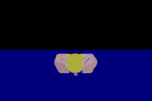
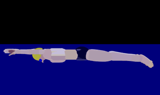
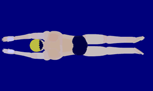

蛙泳
这种游泳姿势因俯卧在水面，划水与蹬腿动作酷似青蛙在水中游进，所以在中国一直称之为蛙泳。游蛙泳时，身体姿势比较平稳，水的支撑面积大，动作省力，呼吸方便，能持久，适用于长时间、远距离游泳。
采用这种姿势游泳，容易观察目标，动作隐蔽，声音小，实用价值很大，长期以来被广泛应用于渔猎、水上搬运、泅渡、救护等方面。
蛙泳技巧
蛙泳口诀
蛙泳配合有一个顺口溜，在讲解蛙泳动作要领之前先介绍给大家：
划手腿不动，收手再收腿，先伸胳膊后蹬腿，并拢伸直漂一会儿。
从顺口溜中可以看到，手的动作是先于腿的动作。一定要在收手后再收腿，伸手后再蹬腿。
蛙泳配合需注意，腿臂呼吸要适宜； 两臂划水腿放松，收手同时要收腿； 两臂前伸腿蹬水，臂腿伸直滑一会； 划水头部慢抬起，伸手滑行慢呼吸。
蛙泳正面

蛙泳臂部动作

- 外划: 双手前伸，手掌倾斜大约45度(小拇指朝上)。双手同时向外、后方划，继而屈臂向后、向下方划。
- 内划: 掌心由外转向内，手带动小臂加速内划，手由下向上并在胸前并拢(手高肘低、肘在肩下)，前伸。
- 前伸: 双手向前伸(肘关节伸直)。要提醒大家注意的是：外划是放松的，内划是用力的、加速完成的、前伸是积极的。
- 蛙泳的完整配合动作：双手外划时抬头换气，双手内划时收腿低头稍憋气，双手前伸过头时蹬腿吐气。
蛙泳腿部动作

- 收腿：屈膝收腿，脚跟向臀部靠拢，小腿要躲在大腿后面慢收腿，这样可以减少阻力。收腿结束时，两膝与肩同宽，小腿与水面垂直，脚牚在水面附近。
- 翻脚：两脚距离大于两膝距离，两脚外翻，脚尖朝外，脚牚朝天，小腿和脚内侧对准水，像英文字母“W”。
- 夹蹬水：实际上是腿伸直的过程(屈髋、伸膝)，由腰腹和大腿同时发力，以小腿和脚内侧同时蹬夹水，先是向外、向后、向下，然后是向内、向上方蹬水，就像画半个圆圈。向外蹬水和向内夹水是连续完成的，也就是连蹬带夹。蹬夹水完成时双腿并拢伸直，双脚内转，脚尖相对。蹬水的速度不要过猛，要由慢到快地加速蹬水，两条腿将 近伸直并拢的时候蹬水速度最快。
- 停：双腿并拢伸直后在一个短暂的滑行(1-2秒)。
蛙泳历史
多年来，蛙泳技术经历了不少变化。50年代初，盛行潜水蛙泳，它对臂力较强、腿力较弱的运动员有利。后来改为水面蛙泳，这时很重视腿的作用，许多运动员，特别是女子，主要靠腿的推进动力。1957年5月1日，中国优秀运动员戚烈云，利用他腿部的优越条件，用高航式蛙泳（蹬腿时上身抬起较高）以1′11″6的成绩创造了100米蛙泳世界纪录。
1958～1960年，中国的穆祥雄、莫国雄相继采用半高航式和平航式又先后4次打破这个项目的世界纪录。但是，1961年美国运动员C.贾斯特雷姆斯基，以他强有力的两臂加快动作频率，创造了100米和200米的蛙泳世界纪录。他以2′29″6的成绩创造200米世界纪录时，用了153个划臂动作。这种新技术，对以后蛙泳技术的改进，起了推动作用。
由于运动技术的发展，手与腿的作用也在不断变化。对这方面的理论探讨，至今还在继续。但是，从技术发展看，臂的作用正在加强，腿的动作幅度缩小了。这种技术变化，可以减少阻力，有利于提高动作频率。
高肘划水，是提高臂部划水效果的新技术。这种技术，是在两臂向后划水时肘关节保持较高的位置，使小臂与大臂之间构成理想角度，形成小臂对水的截面，从而获得更好的划水效果。目前世界上优秀运动员已广泛采用这种技术。腿部动作，在50年代主要是通过加大大腿的工作距离来获得前进动力。现代蛙泳的腿部动作是少收大腿，充分发挥小腿的作用，在收腿结束时，脚后跟尽量靠近臀部。
蛙泳教学
腿部动作
腿部动作是蛙泳技术中最重要部分，学习蛙泳需要从陆上腿部动作做起。具体方法为：
- 坐在地上或凳上，躯干后仰，双手撑地（凳）。双腿并拢抻直，稍抬起双腿，深吸一口气，屏息。将双腿慢慢收回，膝关节同时外分，收腿开始时脚掌稍外翻。屈髋、屈膝，双腿收紧靠近臀部，接着不停顿地向后方蹬腿、并拢，同时口、鼻呼气，蹬水时用力点落在分开的双脚脚掌上。蹬水前半部脚掌与身体纵轴垂直，结束时两脚掌像鞭打一样快速伸直，双腿伸直后间歇一下。呼气要快，动作要连续。
- 入水、水深齐腰，深吸一口气，俯卧于水中，脸入水，臂前伸。收腿同时两膝分开与肩同宽，脚掌沿水面回收。接着双脚应对称有力向后下方做半圆形的加速蹬水至动作结束，两腿并拢。做这个动作时，脚掌和脚内侧向后蹬夹水，蹬水结束后，双腿动作稍停，运动员靠加速度在水面滑行。
- 俯卧在长凳上，中速和慢速模仿蛙泳腿部动作。
- 抬头出水学习腿部动作。蹬池壁或池底滑行，双臂前伸，抬头使口露出水面，做蛙泳腿部动作。注意双臂前伸不要过深，腿部动作除并拢时外，要做得平稳。
- 池边抓扶手或扶同伴做蛙泳腿动作。
- 双臂前伸扶板做腿部练习。
臂部动作
掌握腿部动作之后再进行臂部动作学习。正确的臂部动作是蛙泳必不可少的组成部分。学习方法可采用：
- 陆上站立，体前屈，双脚分开与肩同宽，抬头，双臂前伸。两臂对称外分，稍向下划水，手掌外转，手腕微屈，这便于手掌更早对水。双臂一开始划水，头顺势抬出水面。深吸气。抬头动作不要过猛，划臂动作不要超过肩线。屈肘，双手做一圆形经胸下前伸，呈预备姿势，伸手同时用口、鼻做深呼气。
- 站立在齐腰深的水中，俯卧，臂前伸。吸气后屏气。稍屈腕，手掌向外、向下用力划水，应对水有支撑感。屈肘继续划水，双方划至胸前逐渐接近，手掌转向躯干，然后双臂前伸，呈划水开始姿势。注意划水过程中双臂不庆露出水面。
- 头在水面上学习臂部动作。蹬边滑行，屏息抬头前视。连续做几次划臂动作，注意不要屈腿。
- 蹬边滑行，进一步改进臂部动作。
动作结合及换气
分解学习的最终目的是为了更好的配合，只有把各部分动作有机结合起来才能达到最佳效果。蛙泳臂腿与呼吸的配合应连贯、流畅、有效。练习方法可采用：
- 水中臂腿配合动作。蹬边滑行，脸入水，屏息，臂划水，开始划水是收腿，然后双臂前伸、并拢、脚蹬水。臂、腿伸直后在水面滑行3—4秒后再重复上述动作。做2—3次后，休息片刻，继续练习。
- 重复上一练习，但头要抬出水面。
- 重复上一练习，要交替做抬、低头动作。划水时头抬出水面，收手、蹬腿时头入水。
- 臂的动作与呼吸配合。双臂前伸滑行，头略抬出水面。臂前伸时脸入水，口、鼻均匀、用力吐气，之后慢抬头，开始划臂利用划臂产生的作用力抬头，大张嘴，快吸气。注意吸气不要太晚，在划臂阶段完成吸气。
完整配合
蛙泳完整动作配合游。滑行，双腿伸直，双臂前伸，呼气入水之后开始向后下方划水，抬头快吸气，双臂接近肩线时开始收腿。臂前伸，蹬水时屏息，双臂结束前伸，腿并拢时呼气入水。连续练习，尽量远游。